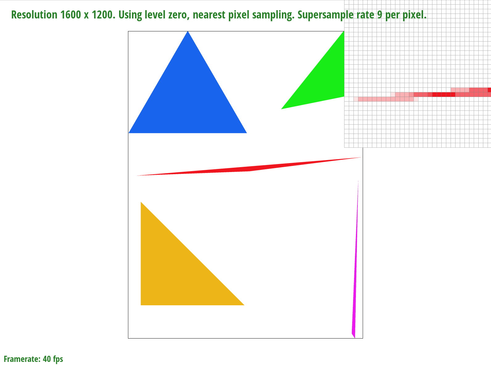

Overview
This project helps me become familiar with the rasterization operation and have a better understanding the content and knowledge of triangle-rasterization, antializing, transformation through matrix, barycentric and mipmap
Section I: Rasterization
Part 1: Rasterizing single-color triangles
Here is an example 2x2 gridlike structure using an HTML table. Each tr is a row and each td is a column in that row. You might find this useful for framing and showing your result images in an organized fashion.
1.How to rasterize triangle?
According to the method told in class, we can effectively judging whether or not a point is inside the bond of a triangle after some linear calculation. By plugging the coordinates into the implicit explanation of the line between 2 points of the triangle, we can easily know the comparative position of the sampled point to that line.After considering both the clockwise and anti-clockwise case, we can find all points inside and make correct sample.
|
|
Including both clockwise and anti-clockwise. |
2.My algorithm is exactly checks each sample within the bounding box of the triangle. At first dertermine the bound and then checking every pixel inside.
3.A screenshot of basic/test4.svg with default settings
|
|
Part 2: Antialiasing triangles
1.Why is supersampling useful? What modifications did you make to the rasterization pipeline in the process?
Supersampling is useful because there exists some high-frequency part inside the picture. When we use some low-frequency sampling, which might cause the aliasing happens, there will be jaggies and the picture seems a little bit weird and rigid. By supersampling, we first increase the sample rate so that we can better understanding the feature of the picture, then we use weighted-average to map it back on the normal size, which makes the sampling more natural.
The modification I made is that increasing the size of sample_buffer first and then directly do the super sampling. After that iterating in the buffer again, we get the color of a sample from the arounding sample_rate's pixel, then we can squeeze it back to the original size.
Question 2
|
|
|
|

|

|
Part 3: Transforms
I just first write the corresponding matrix for 3 different transformation functions
and edit the file of the cube man, such as using an additional rotation and change the scaling rate, so that it can become a gun man with intelligent brain inside his big head.
BTW, he also have strong muscle!
Section II: Sampling
Part 4: Barycentric coordinates
Barycentric coordinates explanation
My own understanding to barycentric coordinates is that: It's a kind of method help us to smoothly fulfill the color of some unknown pixel between several known pixel. Accordinng to the function, it looks like a weighted average for one pixel, to make the whole picture seems great, the color should be more similar to the color of the pixel that really close to the unknown pixel; however, it should also get influenced and include the color of some other pixels that may not be so close, so it is naturally to give a lower weight for these pixels' color.
|
which should produce a smoothly blended color triangle. |
This is my code, we can clearly see that at the center of this picture the colors got messy so they become black |
Part 5: "Pixel sampling" for texture mapping
1.What is pixel sampling? The difference between nearst and bilinear sampling method?
Pixel sampling means that the process of determining the color of pixels on the screen. The color comes from multiple samples on the given image, including 2 general ways : nearst sampling and bilinear sampling.
2.The relative differnece. When there will be large difference?
Just as my mention before, those edge places with significant color change will bring large difference and we can see the priority of the bilinear sampling method.
|
|
Part 2: Antialiasing triangles
1.Why is supersampling useful? What modifications did you make to the rasterization pipeline in the process?
Supersampling is useful because there exists some high-frequency part inside the picture. When we use some low-frequency sampling, which might cause the aliasing happens, there will be jaggies and the picture seems a little bit weird and rigid. By supersampling, we first increase the sample rate so that we can better understanding the feature of the picture, then we use weighted-average to map it back on the normal size, which makes the sampling more natural.
The modification I made is that increasing the size of sample_buffer first and then directly do the super sampling. After that iterating in the buffer again, we get the color of a sample from the arounding sample_rate's pixel, then we can squeeze it back to the original size.
Question 2
|
|
|
|
|
|
Part 6: "Level sampling" with mipmaps for texture mapping
1.What is level sampling? What's the implementation?
Level sampling is that we seperate and sample the image at different levels. The lower the level, the more clear will the image be. In order to implement this, I add some code apart from the task5. First I judge the 3 nearest pixel according to the problem discription. Then, I have to translate the coordinates into the (u,v)pairs so that I can find the related, correct level of the sampling. (For convenience and clearness, I write a function called uv_trans so that I can shorter my code and calculate the correct barycentric differentials.) 2.pixel sampling, level sampling, or the number of samples per pixel and their tradeoff? For pixel sampling, there are 2 methods. Nearest pixel sampling is fast, and do not require extra space for storing, but might perform bad when the sample rate is low and produce more aliasing. However, bilinear pixel sampling is slower because it increase the calculation, which results to more smooth image. You can view my page at
After that, I translate the properties of these adjacent pixels into Vector2D then throw it into the tex.sample() function, now we can conveniently search for the needed colors!
https://zhangwt2001.github.io/proj-webpage-template/